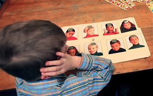
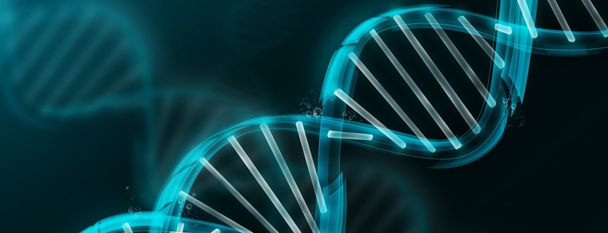
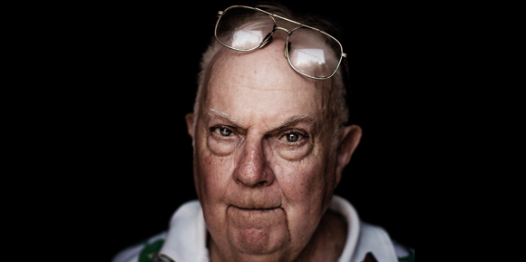
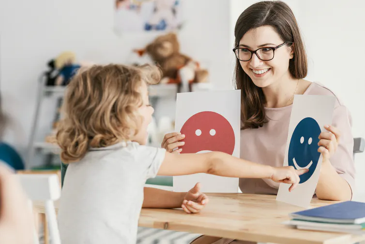
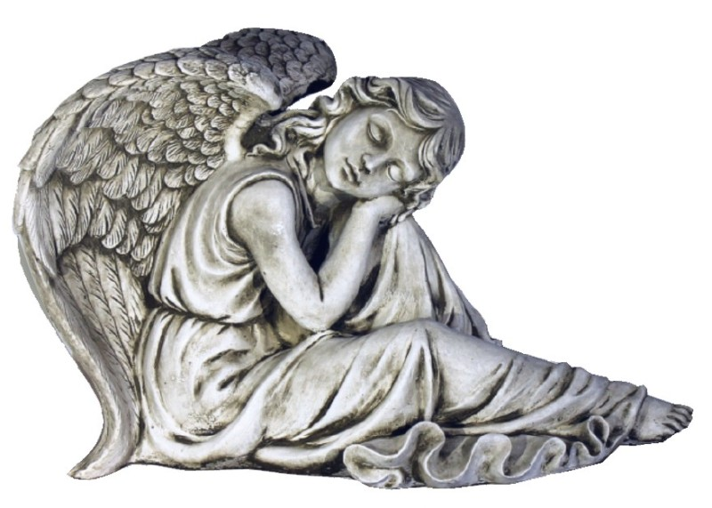

MITO: El autismo es una enfermedad y se cura
No, el autismo no es una enfermedad
Es una condición o transtorno relacionado con el desarrollo del sistema nervioso. Se nace con él y no se puede contagiar ni contraer a lo largo de la vida. Aunque no se puede curar, sí se puede, y se debe, tratar.
Los fármacos pueden ayudar a mejorar aspectos concretos derivados de la condición, pero en ningún caso la eliminan. Las personas autistas nacen con unas dificultades especiales que pueden interferir en su adaptación al entorno y que requieren un tratamiento de un equipo multicisciplinario integrado por terapeutas, neurólogos, psiquiatras, etc.
La idea de que el niño podrá salir del autismo si los padres, los educadores y los profesionales hacen un buen trabajo es errónea, contraproducente, dolorosa para todos los miembros de la familia y peligrosa. Puede evitar que los padres acepten a su hijo como el ser maravilloso que realmente es, que reconozcan sus valores y fortalezas y, por el contrario, llevarles a un camino de expectativas imposibles, búsqueda de falsos culpables y frustración.
MITO: Las vacunas pueden causar autismo
NO: Las vacunas NO causan autismo
Esta afirmación es rotundamente falsa, a pesar de que existen grupos de opinión que insisten en su veracidad. Un nuevo estudio llevado a cabo en el Statens Serum Institut en Dinamarca con casi 600.000 niños corrobora nuevamente que no existe relación alguna entre vacunas y autismo.
En 1998 se publicó en la revista científica The Lancet un artículo en el que se afirmaba que la vacuna conjunta de rubéola, varicela y sarampión, la que se conoce como triple vírica (MMR), podía provocar autismo. Andrew Wakefield, autor de la investigación, reconoció errores metodológicos en el estudio, se retractó y perdió su licencia médica. Sin embargo, el bulo se mantiene y la comunidad científica internacional se ve obligada a refutarlo continuamente.
MITO: Su origen es exclusivamente genético
No se conocen todos las posibles causas de autismo
Aún no ha sido posible determinar un único origen del autismo: «Existen múltiples causas y en muchos casos no se asocian exclusivamente a un factor genético», aseguran los profesionales. Ciertos estudios vinculan el autismo con infecciones en el embarazo, con la edad de los padres y la calidad del esperma o de los óvulos, con el consumo de tóxicos durante la gestación, y otros factores, «pero lo cierto es que no existe un único motivo que se aplique a todos los casos». Pero atención, que no se conozcan todas las posibles causas, no significa que no se conozcan las cosas que no son causas.
What causes autism? (Ver más, en inglés) >MITO: El autismo es provocado por un mal vínculo entre madre e hijo
Creencia nefasta si las hay
Inventada por Kanner en base a creencias de Freud, y luego desmentida por el mismo Kanner. Los padres no son los culpables del trastorno de su hijo. Es importante que establezcan un buen vínculo afectivo con él, que conozcan sus puntos débiles y fuertes, y que sepan cómo tienen que relacionarse con él, cómo juega, come, socializa, etc. Han de colaborar con los profesionales encargados de su tratamiento terapéutico, pero sin olvidar su papel de padres como con cualquier otro hijo, con o sin TEA: conocerlo, disfrutar y jugar con él, educarlo, alimentarlo, etc.
Kanner y las madres nevera (Ver más) >MITO: El autismo es infantil
NO: Los niños autistas se vuelven adultos autistas
Crecen y se vuelven adolescentes autistas, y luego adultos autistas. La misma proporción de autismo que existe en los niños (alrededor de 1%) existe en los adultos. Sucede que los diagnósticos son modernos y muchos adultos recién se enteran que lo son (muchas veces por los diagnósticos de sus hijos), y muchos siguen sin saberlo. Con los años la mayoría aprende (por las buenas o por las malas) a "disimularse" en la sociedad. Pero si verificamos su infancia, fue igual o peor a la de los autistas niños actuales, y, por supuesto, las características (que se verifican con herramientas de diagnóstico como el test ADOS) permanecen toda la vida.
MITO: Los autistas son angelitos
Ni angelitos, ni niños índigo, ni azules
Ni angelitos, ni niños índigo, ni niños cristal, ni puros, ni bendiciones, ni inocentes. Son niños con problemas como todos, cada uno con sus virtudes y desafíos. Algunos son muy buenos y otros no tanto. Algunos no mienten, y otros sí, y muy bien. Algunos se portan muy bien y otros no tanto. Son personas de este mundo, como todos, y deben ser tratados como tales.